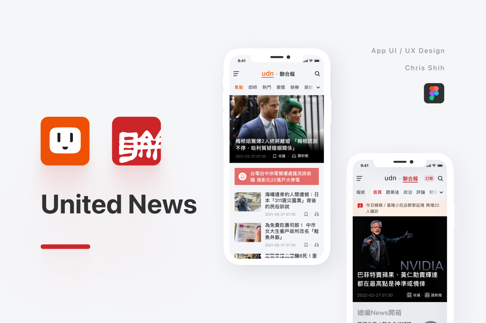
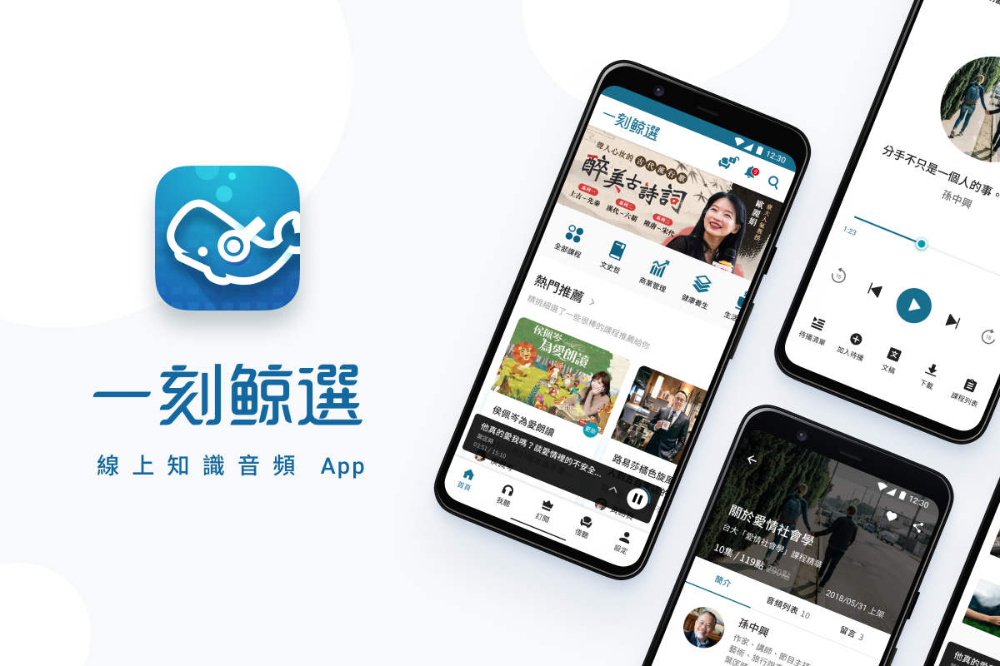

UI / UX
App
United News
不僅提升了產品的留存率和轉化率，還大幅改善了跨平台的體驗一致性。同時，設計規範的強化讓產品在視覺與操作上更具一致性。

UI / UX
App
Jin FM
經過產品迭代，產品逐年成長，與前兩年成果做比較，營收成長了 80% 以上；每天的使用人數也成長了 71%。

UX
App
Clock-in App
在設計活動過後，經過產品系統面的迭代與優化，與政策面的改善，每天的使用人數也從 33% 達到了 82%。
UI / UX
App
TaskFlow Pro
Project management tool enhancing team collaboration and productivity.
UI / UX
App
Wanderlust Travel
Travel planning platform with personalized itinerary recommendations.
UI / UX
App
FitTrack Pro
Fitness tracking app with personalized workout plans and progress analytics.
UI / UX
App
EduSphere Platform
Learning management system enhancing student engagement and course delivery.
UI / UX
App
SmartHome Hub
Connected home management system with intuitive device control.
UI / UX
App
MeloStream Music
Music streaming platform with personalized discovery and social sharing.